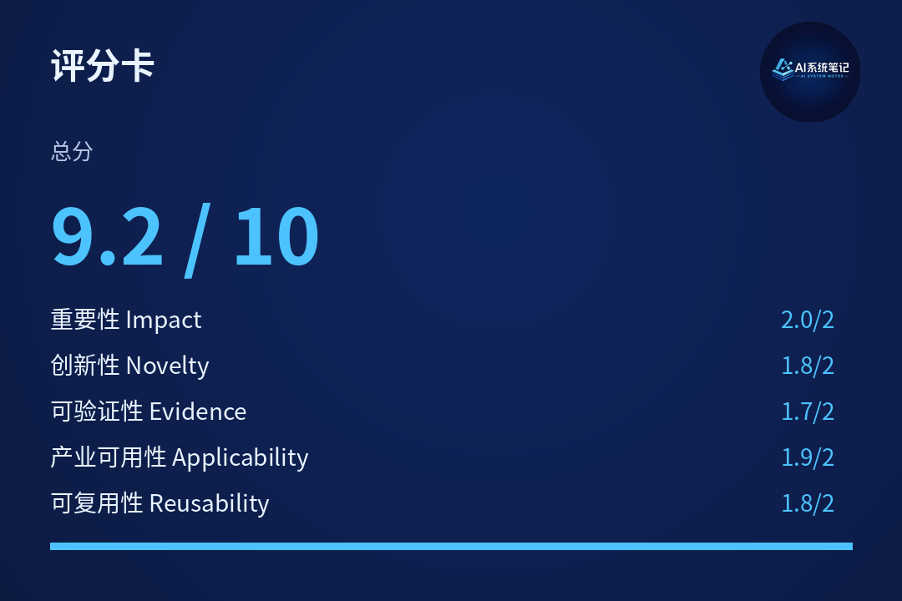
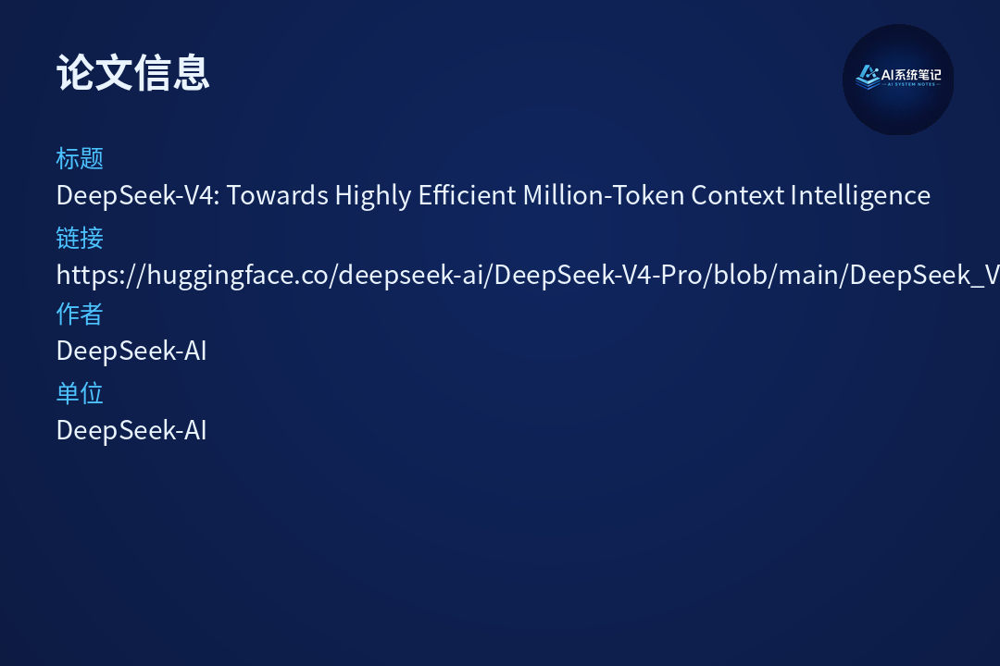

一句话结论：DeepSeek V4 的核心突破是将百万Token长上下文从"技术演示"推进到"工程可部署"——通过CSA+HCA混合注意力架构，实现相比V3.2仅27%的FLOPs和10%的KV Cache，让超长上下文真正具备商业部署可行性。


推理模型（如DeepSeek-R1、OpenAI o系列）的崛起确立了Test-time Scaling新范式，但其根本瓶颈在于标准Attention机制的二次计算复杂度——上下文越长，计算成本呈指数级增长。
当前行业痛点：
DeepSeek-V4要解决的核心问题：如何让百万Token上下文从"演示级能力"变成"可常规部署的工程能力"——不是能不能塞进去，而是成本能不能承受、效率能不能接受。
DeepSeek-V4发布两个MoE模型，均支持百万Token上下文：
| 模型 | 总参数量 | 激活参数量 | 定位 |
|---|---|---|---|
| DeepSeek-V4-Pro | 1.6T | 49B | 旗舰性能，最强推理 |
| DeepSeek-V4-Flash | 284B | 13B | 极致效率，成本优先 |
1. CSA + HCA 混合注意力架构（核心创新）
2. mHC（Manifold-Constrained Hyper-Connections）
增强传统残差连接，将残差映射约束到特定流形，提升深层信号传播稳定性。
3. Muon优化器
引入Muon优化器加速收敛、提升训练稳定性。
4. 全栈工程优化
DeepSeek-V4-Pro vs V3.2（1M Token上下文）
DeepSeek-V4-Flash vs V3.2（1M Token上下文）
DeepSeek-V4-Pro-Max（Pro的最大推理 effort 模式）在核心评测集上：
DeepSeek-V4的效率突破，让以下场景的商业部署可行性发生质变：
| 应用场景 | V3.2时代痛点 | V4时代可行性 |
|---|---|---|
| 代码库理解 | 大型项目上下文超长，成本不可控 | 百万Token原生支持，成本降低3-10倍 |
| 复杂Agent工作流 | 多轮工具调用导致上下文膨胀，推理成本高 | Flash版本10% FLOPs，长程Agent成本可控 |
| 科研文献综述 | 跨文档分析需分段检索，信息损失大 | 原生百万Token上下文，端到端分析 |
| 合同/尽调文档分析 | 长文档需切片处理，逻辑连贯性受损 | 完整上下文理解，跨条款关联分析 |
核心洞察：DeepSeek-V4的价值不仅在于模型能力本身，而在于将长上下文从"技术亮点"转化为"可规模部署的基础设施"——这对ToB Agent、代码助手、知识管理等场景的成本结构产生根本性影响。
DeepSeek-V4的真正突破，是把百万Token长上下文从参数能力的"秀肌肉"，推进到工程效率的"真部署"——通过CSA+HCA混合注意力架构，实现3-10倍的效率提升，让超长上下文Agent首次具备商业可行的成本结构。
本文基于DeepSeek-V4技术报告整理 | 评分维度：技术创新/工程化/产业影响/可复现性/性价比